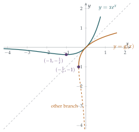

Sketch the curve \(y = x\mathrm{e}^x\), giving the coordinates of any stationary points.
The function \(\mathrm{f}\) is defined by \(\mathrm{f}(x) = x\mathrm{e}^x\) for \(x \geq a\), where \(a\) is the minimum possible value such that \(\mathrm{f}\) has an inverse function. What is the value of \(a\)?
Let \(\mathrm{g}\) be the inverse of \(\mathrm{f}\). Sketch the curve \(y = \mathrm{g}(x)\).
For each of the following equations, find a real root in terms of a value of the function \(\mathrm{g}\), or demonstrate that the equation has no real root. If the equation has two real roots, determine whether the root you have found is greater than or less than the other root.
(a) \(\mathrm{e}^{-x} = 5x\) (b) \(2x\ln x + 1 = 0\) (c) \(3x\ln x + 1 = 0\) (d) \(x = 3\ln x\)
Given that the equation \(x^x = 10\) has a unique positive root, find this root in terms of a value of the function \(\mathrm{g}\).
The hook
Can you solve \(e^{-x} = 5x\)? Not with any function on your calculator. Rearranging gets nowhere: the \(x\) is stuck both inside and outside the exponential. You could find a numerical answer by trial and improvement, but there is no “formula”.
Or is there? This question takes a bold step: if a family of equations has no solution in terms of known functions, invent a new function that solves them. That is exactly what mathematicians did with \(\sqrt{x}\) (the inverse of \(x^2\)), with \(\ln x\) (the inverse of \(e^x\)) and with \(\arcsin x\). The new function here is the inverse of \(xe^x\), now called the Lambert W function. Once you have it, a surprising range of equations, from \(x^x = 10\) to a law of physics, can be solved exactly.
Before you start
What does it actually mean to “solve” an equation? Is \(x = \sqrt{2}\) a solution of \(x^2 = 2\), or just a name for the solution?
Both. \(\sqrt2\) is a name for “the positive number whose square is \(2\)”; we accept it as an answer because the function \(\sqrt{\phantom{x}}\) is well understood, easy to compute and has known properties. Whether an answer counts as a “formula” depends on which functions we have agreed to name. This question adds one more to the list.
Working it through
Stage 1 The curve \(y = xe^x\)
\(\frac{\mathrm{d}y}{\mathrm{d}x} = e^x + xe^x = (1 + x)e^x\), which is zero only at \(x = -1\), where \(y = -e^{-1}\). The derivative is negative for \(x < -1\) and positive for \(x > -1\), so this is a minimum.
What happens to \(xe^x\) as \(x \to +\infty\) and as \(x \to -\infty\)? Where does the curve cross the axes?
As \(x \to \infty\), \(xe^x \to \infty\). As \(x \to -\infty\), \(xe^x \to 0\) from below, because the exponential decay beats the linear growth. The curve passes through the origin. So it comes in from just below the negative \(x\)-axis, dips to its minimum \((-1, -\frac1e)\), then rises through \((0, 0)\) and shoots upwards (Figure 3.9.1).
Stage 2 The inverse
To have an inverse, \(\mathrm{f}\) must be one-to-one, so it must be restricted to a region where it is strictly increasing or strictly decreasing. The largest such interval containing the right-hand part is \([-1, \infty)\), so \(a = -1\). On \([-1, \infty)\), \(\mathrm{f}\) increases from \(-\frac1e\) to \(\infty\), so the inverse \(\mathrm{g}\) is defined on \([-\frac1e, \infty)\), increases from \(\mathrm{g}(-\frac1e) = -1\), passes through \(\mathrm{g}(0) = 0\), and grows slowly (for large \(x\), even more slowly than \(\ln x\)). Its graph is the reflection of the right-hand part of \(y = xe^x\) in the line \(y = x\), with a vertical tangent at \((-\frac1e, -1)\).
The defining property of \(\mathrm{g}\) is \[\mathrm{g}(z)\,e^{\mathrm{g}(z)} = z, \qquad \mathrm{g}(z) \geq -1.\] So the strategy for every part of (iii) is the same: rearrange the equation into the form \((\text{something})\,e^{(\text{the same something})} = (\text{a number})\).

Stage 3 Four equations
(a) \(e^{-x} = 5x\). Multiply by \(e^x\) and divide by \(5\): \(xe^x = \frac15\). So \(x = \mathrm{g}\bigl(\frac15\bigr) \approx 0.169\). Since \(xe^x\) is negative for \(x < 0\), any root is positive, and \(xe^x\) is increasing for \(x > 0\), so this is the only root.
For (b) and (c), the unknown appears as \(x\ln x\). What substitution turns \(x\ln x\) into something of the form \(ue^u\)?
Put \(x = e^u\), so \(\ln x = u\) and \(x\ln x = ue^u\).
(b) \(2x\ln x + 1 = 0\) becomes \(ue^u = -\frac12\). But \(ue^u \geq -\frac1e \approx -0.368\) for all real \(u\), and \(-\frac12 < -\frac1e\). So there is no real root.
(c) \(3x\ln x + 1 = 0\) becomes \(ue^u = -\frac13\), and \(-\frac1e < -\frac13 < 0\). A horizontal line at height \(-\frac13\) cuts \(y = ue^u\) twice, once on each side of the minimum at \(u = -1\). The root on the right is \(u = \mathrm{g}\bigl(-\frac13\bigr)\), giving \[x = e^{\mathrm{g}(-1/3)} \approx 0.538.\] The other root has \(u < -1 < \mathrm{g}\bigl(-\frac13\bigr)\), and \(x = e^u\) is increasing in \(u\), so the root we have found is the greater of the two. (The other is about \(0.220\).)
Now try (d), \(x = 3\ln x\). (Hint: exponentiate and aim for \((\text{something})\,e^{\text{something}}\) with the something being a multiple of \(x\).)
(d) \(x = 3\ln x\) means \(e^{x/3} = x\), so \(xe^{-x/3} = 1\), and multiplying by \(-\frac13\), \[\left(-\frac x3\right)e^{-x/3} = -\frac13.\] So \(-\frac x3\) is one of the two solutions of \(ue^u = -\frac13\) found in (c). Taking the one given by \(\mathrm{g}\), \(x = -3\,\mathrm{g}\bigl(-\frac13\bigr) \approx 1.857\). The other root comes from the other solution \(u < \mathrm{g}(-\frac13)\), which gives a larger \(x = -3u\). So this time the root we have found is the smaller of the two. (The other is about \(4.536\).)■
Stage 4 \(x^x = 10\)
Taking logarithms, \(x\ln x = \ln 10\). With \(x = e^u\) this is \(ue^u = \ln 10\), so \(u = \mathrm{g}(\ln 10)\) and \[x = e^{\mathrm{g}(\ln 10)} \approx 2.506.\] Since \(\mathrm{g}(z)e^{\mathrm{g}(z)} = z\), we can also write this as \(x = \dfrac{\ln 10}{\mathrm{g}(\ln 10)}\).■
Looking back
Name the missing function. When an equation cannot be solved with known functions, defining a new function as an inverse is a legitimate, and often illuminating, move.
Rearrange to a standard form. Every part of (iii) and (iv) came down to \(ue^u = \text{constant}\), using a substitution such as \(x = e^u\) or \(u = -\frac x3\).
Count roots with the graph. Whether \(ue^u = c\) has zero, one or two solutions depends only on where \(c\) sits relative to the minimum value \(-\frac1e\).
What’s really going on
Johann Heinrich Lambert studied equations of this type in 1758, and Euler took them further in 1783. But the function had no standard name until the 1990s, when the developers of the computer algebra system Maple needed one. In 1996 Robert Corless, Gaston Gonnet, David Hare, David Jeffrey and Donald Knuth published a paper, “On the Lambert W function”, that collected its properties and applications. It has been cited thousands of times, and W is now built into most mathematical software. The function \(\mathrm{g}\) in the question is the principal branch \(W_0\); the dashed curve in Figure 3.9.1, which gave the second roots in (c) and (d), is the other real branch \(W_{-1}\).
Where W appears
Wien’s displacement law. The wavelength at which a hot body radiates most strongly is inversely proportional to its temperature. The constant comes from solving \(5(1 - e^{-x}) = x\), whose positive solution is \(x = 5 + W\bigl(-5e^{-5}\bigr) \approx 4.965\). That is why the Sun, at about \(5800\) K, looks yellow-white, and why a cooler red dwarf looks red.
Power towers. The infinite tower \(x^{x^{x^{\cdot^{\cdot^{\cdot}}}}}\) converges for \(e^{-e} \leq x \leq e^{1/e}\), and its value is \(\dfrac{W(-\ln x)}{-\ln x}\).
Population and epidemic models. The final size of an epidemic in the simplest model, and the time to reach a given population in some growth models, are both given by W.
Elementary functions
Is \(W\) really new, or could it be written using \(\exp\), \(\ln\), roots and the trigonometric functions? It is genuinely new: a theorem going back to Joseph Liouville in the 1830s shows that \(W\) is not an elementary function. The same theory shows that some innocent-looking integrals, such as \(\int e^{-x^2}\,\mathrm{d}x\), cannot be done in elementary terms, which is why the normal distribution needs its own special function.
The thinking skill
An equation \(\mathrm{f}(x) = c\) is solved by \(x = \mathrm{f}^{-1}(c)\), provided \(\mathrm{f}\) is restricted to make it one-to-one. The restriction determines which solution you get.
Many equations that look different are the same equation in disguise; finding the substitution that reveals the common form is the key step.
Try this next
Two, four, and one more. The equation \(x^2 = 2^x\) has the obvious solutions \(x = 2\) and \(x = 4\) (compare Section 3.5). Show that it also has a negative solution, and that this solution is \[x = -\frac{2}{\ln 2}\,\mathrm{g}\!\left(\frac{\ln 2}{2}\right) \approx -0.767.\]
A derivative. By differentiating \(\mathrm{g}(x)e^{\mathrm{g}(x)} = x\) implicitly, show that, for \(x \neq 0\), \[\mathrm{g}'(x) = \frac{\mathrm{g}(x)}{x\bigl(1 + \mathrm{g}(x)\bigr)}.\] What happens at \(x = -\frac1e\)?
An integral. Use the substitution \(x = we^w\) to show that \(\displaystyle\int_0^e \mathrm{g}(x)\,\mathrm{d}x = e - 1\).
The tower. Assuming the tower \(T = \sqrt2^{\sqrt2^{\sqrt2^{\cdots}}}\) converges, show that \(T = \sqrt2^{\,T}\), and deduce that \(T = 2\) or \(T = 4\). Which is it? (Compute a few terms of the sequence \(t_1 = \sqrt2\), \(t_{n+1} = \sqrt2^{\,t_n}\), and think about the cobweb diagrams of Section 2.2.)
Further reading
Robert Corless et al., “On the Lambert W function”, Advances in Computational Mathematics 5 (1996). The paper that named the function. The first sections are readable with this section behind you.
Brian Hayes, “Why W?”, American Scientist 93 (2005). A lively essay on the function’s history and uses. Free online.
Brian Conrad, “Impossibility theorems for elementary integration”. Lecture notes, available online, explaining Liouville’s theory. Advanced.